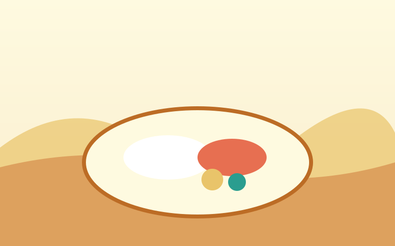

Rice and Fish Make a Bengali
There is an old saying, "Mache-bhate Bangali" — fish and rice make a Bengali. Rice is eaten at almost every meal, served with lentils (dal), vegetables and curries made from river fish such as hilsa (ilish), the national fish.
Bangladeshi food uses mustard oil, turmeric, green chillies and a spice mix called panch phoron. Meals are usually shared with family, and guests are always offered more than they can eat. Read more on Bangladeshi cuisine.

Ilish Bhat
Hilsa fish cooked in mustard sauce and served with steaming white rice — the most loved dish in the country.
Pitha
Sweet and savoury rice cakes made in winter with fresh date-palm jaggery. Every region has its own kind.